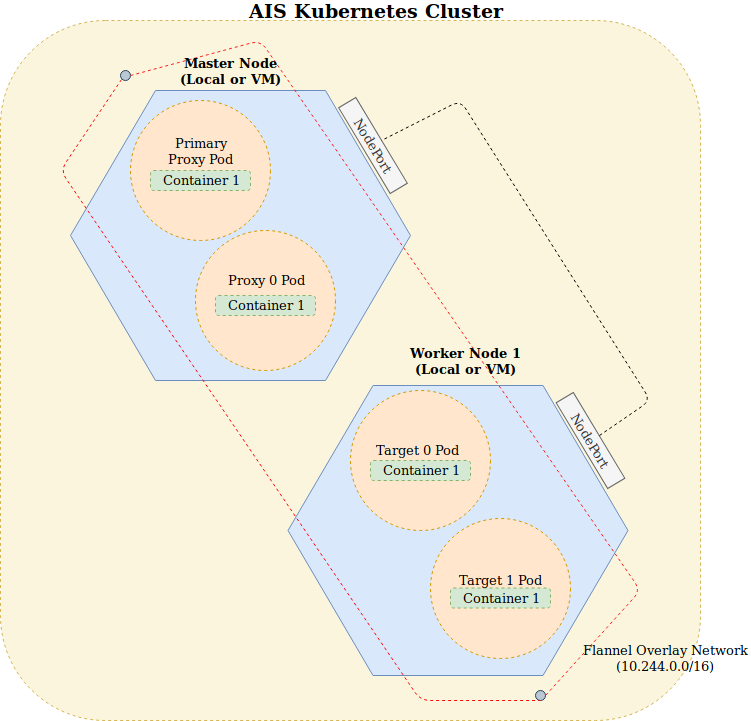

DEPLOY/DEV/KUBERNETES
Disclaimer
For a more robust version, the development team has switched over to Docker. If you would like to deploy AIS in a containerized environment, consider using Docker. The Docker folder can be found in
deploy/dev/docker.
Kubeadm: Deploying an AIStore Cluster
For development purposes, we are going to use Kubeadm to create a simple two node cluster with any number of proxies and any number of targets. Users can also decide to deploy AIS with a single-node.

Using Minikube to deploy a Kubernetes cluster will also work for deploying single node clusters. It cannot be used for multi-node deployments due to its limitations.
Prerequisites
AIStore on Kubernetes utilizes a local Docker repository. This allows Kubernetes nodes to build the latests AIS version directly from the source without having to fetch from a remote registry. This guide uses your local machine as the local Docker registry host. You will also need Docker-Compose installed. For more information, see Docker and Docker-Compose installation guide
Creating a local Docker registry for local networks
- Create a self signed certificate for your Docker registry. This will allow your Kubernetes nodes on the same network to pull images from the local Docker repository.
$ sudo vim /etc/ssl/openssl.cnfAdd the line
subjectAltName=IP:<YOUR_IPv4_ADDRESS>below the section labeled[ v3_ca ]. - Create a certificate directory
$ sudo mkdir /certs - Create the certificate
$ sudo openssl req \ -newkey rsa:4096 -nodes -sha256 -keyout /certs/domain.key \ -x509 -days 365 -out /certs/domain.crtYou’ll be prompted to fill out some information for your certificate. You should end up with two files
domain.crtanddomain.key. - To allow access for Docker to trust these certificates,
$ sudo mkdir -p /etc/docker/certs.d/<YOUR_IPv4_ADDRESS>:5000 $ sudo cp /certs/domain.crt /etc/docker/certs.d/<YOUR_IPv4_ADDRESS>:5000/ $ cd /etc/docker/certs.d/<YOUR_IPv4_ADDRESS>:5000/ $ sudo mv domain.crt ca.crt - Reload the Docker daemon to use the new certificate
$ sudo service docker reload - On your other Kubernetes nodes, copy the
ca.crtfile toetc/docker/certs.d/<YOUR_IPv4_ADDRESS>:5000$ sudo mkdir -p /etc/docker/certs.d/<YOUR_IPv4_ADDRESS>:5000Copy the contents of
ca.crtto the directory and reload the Docker service with$ sudo service docker reloadIf you change or create a new certificate, and you already have an AIS instance running on Kubernetes, running
sudo service docker reloadmight not be enough to tell Docker to use your new certificate. You might also need to delete your local Docker registry (docker psand look for the “registry” Docker container) and runsudo ./deploy_kubernetesagain.
Setup with Kubeadm
We can use our local machine to host our Kubernetes cluster. For multi-node clusters, Kubeadm requires VMs or other physical machines to host the nodes.
- Install Kubeadm and kubelet and kubectl tools.
$ sudo apt-get update && sudo apt-get install -y apt-transport-https curl $ curl -s https://packages.cloud.google.com/apt/doc/apt-key.gpg | apt-key add - $ sudo cat <<EOF >/etc/apt/sources.list.d/kubernetes.list deb https://apt.kubernetes.io/ kubernetes-xenial main EOF $ sudo apt-get update $ sudo apt-get install -y kubelet kubeadm kubectl $ sudo apt-mark hold kubelet kubeadm kubectl - Disable swap memory. Kubeadm requires that swap memory is disabled.
$ sudo swapoff -a - Disable your firewall to allow DNS resolution for the pods in the Kubernetes cluster.
$ sudo ufw disable
For multi-node Kubernetes clusters, you need perform the same steps on each machine
Deploying a Two-Node Cluster
- Initialize the Kubernetes cluster with your local machine as the host.
$ sudo kubeadm init --pod-network-cidr=10.244.0.0/16
The --pod-network-cidr allocates a CIDR for every node. This is a requirement by flannel.
Flannel is a virtual network that gives a subnet to each node for use with container(pod) runtimes.
Ensure that Docker and Kubeadm are installed on all machines in the cluster
- Once Kubeadm finishes initializing, a set of commands should appear on the screen.
$ mkdir -p $HOME/.kube $ sudo cp -i /etc/kubernetes/admin.conf $HOME/.kube/config $ sudo chown $(id -u):$(id -g) $HOME/.kube/confThis allows non-root users to use
kubectl. - Configure the pod network add-on. This will be used to allow pods to communicate with each other.
$ kubectl apply -f https://raw.githubusercontent.com/coreos/flannel/bc79dd1505b0c8681ece4de4c0d86c5cd2643275/Documentation/kube-flannel.ymlAlso make sure that
/proc/sys/net/bridge/bridge-nf-call-iptablesis set to1by running$ sudo sysctl net.bridge.bridge-nf-call-iptables=1 - You should have received a command with the form,
$ kubeadm join <MASTER_NODE_IP> --token <TOKEN> --discovery-token-ca-cert-hash <HASH>Use this to join the nodes to your cluster.
- Once that is setup, you should see that your Kubernetes nodes has been created. Check with
$ kubectl get nodesThe name of the nodes should be the the name of your machines that they are running on. If the status is
NotReady, wait for a couple of seconds and check again. - Once the status is
Ready, add labels to your nodes and untaint the master node.- Add a label:
# Assigns the node to host the proxy Pod
$ kubectl label node <YOUR_NODE_NAME_HERE> nodename=ais-proxy
# Assigns the node to host the target Pods
$ kubectl label node <YOUR_NODE_NAME_HERE> nodename=ais-target
This allows the pods to be assigned to particular nodes.
For a single node cluster, assign the nodename to be ‘ais’
- untaint the node:
$ kubectl taint nodes --all node-role.kubernetes.io/master-
This allows for pods to be scheduled on the host/master node.
- Run the deployment script
sudo ./deploy_kubernetes.sh.This is still under development. It currently only works with one proxy and any number of targets. If the pod is stuck on
ContainerCreatingstatus, you can check the logs usingkubectl describe pods <POD_NAME> - After a minute, you should see that the pods are running with
kubectl get pods -o wide.$ kubectl get pods -o wide NAME READY STATUS RESTARTS AGE IP NODE NOMINATED NODE READINESS GATES aisprimaryproxy-77456674db-6fzq5 1/1 Running 0 89s 10.244.0.4 ais-master <none> <none> aistarget-5b6c698c8-f87mm 1/1 Running 0 39s 10.244.1.1 ais-worker1 <none> <none> - You can also scale the number of storage targets.
$ kubectl scale --replicas=<REPLICA_COUNT> -f aistarget_deployment.ymlSetting the number of replicas to
6will create six targets.
Interacting with the Cluster
To interact with the cluster, install the AIS CLI tool
$ cd ../../../cli
$ ./install.sh
This will create a binary named ais that can be used to interact with the cluster. Configure the CLI tool to point to the Kubernetes cluster by assigning the AIS_URL environment variable to the URL of the primary proxy.
Example:
$ export AIS_URL=http://10.244.0.4:8080
For the list of available commands, see here.
- To run tests, SSH into the primary proxy
$ kubectl exec -it <AIS_PRIMARY_PROXY_NAME> -- /bin/bash
Once inside the container, go to the $WORKDIR
$ cd $WORKDIR
From there you can run tests using,
$ CGO_ENABLED=0 BUCKET=yourS3Bucket go test ./tests -v -count=1
This runs the entire test suite. To run specific tests, use the -run tag.
Stopping the Cluster
-
Run
./stop_kubernetes.shto teardown the deployments. -
To teardown the Kubernetes cluster:
$ sudo kubeadm reset
Useful Kubernetes commands
- To list all the running pods
$ kubectl get pods -o wide NAME READY STATUS RESTARTS AGE IP NODE aisprimaryproxy-77456674db-6fzq5 1/1 Running 0 89s 10.244.0.4 ais-master aistarget-5b6c698c8-f87mm 1/1 Running 0 39s 10.244.1.1 ais-worker1 - To view pod logs, run
kubectl logs <pod_name>$ kubectl logs aistarget-5b6c698c8-bdgc5 I 18:57:42.232529 config.go:447 Logdir: "/tmp/ais/log" Proto: tcp Port: 8080 Verbosity: 3 I 18:57:42.232823 config.go:449 Config: "/aisconfig/ais.json" StatsTime: 10s I 18:57:42.232864 daemon.go:194 version: 6d9c095 | build_time: 2019-02-01T18:57:39+0000 I 18:57:42.233194 utils.go:108 Found only one IPv4: 10.244.0.50, MTU 1450 W 18:57:42.233208 utils.go:110 IPv4 10.244.0.50 MTU size is small: 1450 I 18:57:42.233407 httpcommon.go:291 Configured PUBLIC NETWORK address: [10.244.0.50:8080] (out of: ) I 18:57:42.235359 daemon.go:245 Warning: configuring 1 fspaths for testing I 18:57:42.237140 keepalive.go:377 Starting targetkeepalive I 18:57:42.237150 iostat_linux.go:91 Starting iostat I 18:57:42.237182 fshc.go:88 Starting fshc I 18:57:42.237162 atime.go:151 Starting atime I 18:57:42.237292 common_stats.go:192 Starting storstats I 18:57:42.237447 mem.go:890 Starting gmem2, minfree 1.25GiB, low 3.76GiB, timer 2m0s I 18:57:42.237468 mem.go:890 gmem2: free memory 27.07GiB > 80% total I 18:57:42.242928 clustermap.go:314 registered smap-listener aistarget-5b6c698c8-bdgc52019-02-01T18:57:39+0000=>public/rebalance I 18:57:42.242955 target.go:261 target aistarget-5b6c698c8-bdgc52019-02-01T18:57:39+0000 is ready I 18:57:42.256547 mem.go:890 Starting ec, minfree 2.71GiB, low 8.12GiB, timer 2m0s I 18:57:42.256565 mem.go:890 ec: free memory 27.07GiB > 80% total I 18:57:42.901475 httpcommon.go:980 receive Smap v1 (local v0), ntargets 1, action early-start-have-registrations I 18:57:42.901507 target.go:3344 receive Smap: v1, ntargets 1, primary aisprimaryproxy-77456674db-6mvkb2019-02-01T18:56:48+0000, action early-start-have-registrations I 18:57:42.901517 target.go:3349 target: aistarget-5b6c698c8-bdgc52019-02-01T18:57:39+0000 <= self I 18:57:42.903763 target.go:3288 receive bucket-metadata: version 1, action early-start-have-registrations I 18:57:43.910116 httpcommon.go:980 receive Smap v2 (local v1), ntargets 1, action primary-started-up I 18:57:43.910145 target.go:3344 receive Smap: v2, ntargets 1, primary aisprimaryproxy-77456674db-6mvkb2019-02-01T18:56:48+0000, action primary-started-up I 18:57:43.910156 target.go:3349 target: aistarget-5b6c698c8-bdgc52019-02-01T18:57:39+0000 <= self I 18:57:44.244925 target.go:3432 cluster started up I 18:57:52.237593 {"up.μs.time":10000264} I 18:57:52.241998 sda, 0.00, 8.00, 0.00, 0.03, 0.00, 0.00, 0.00, 0.00, 0.00, 0.25, 0.00, 0.00, 3.50, 0.25, 0.20 I 18:58:02.237536 {"kalive.μs":858,"up.μs.time":20000268} I 18:58:02.241988 sda, 0.00, 8.00, 0.00, 0.03, 0.00, 0.00, 0.00, 0.00, 0.00, 0.25, 0.00, 0.00, 3.50, 0.25, 0.20 I 18:58:12.237533 {"kalive.μs":788,"up.μs.time":30000267} I 18:58:12.241953 sda, 0.00, 8.00, 0.00, 0.04, 0.00, 3.50, 0.00, 30.43, 0.00, 0.50, 0.00, 0.00, 5.75, 0.50, 0.40 I 18:58:22.237577 {"kalive.μs":800,"up.μs.time":40000290} I 18:58:22.242014 sda, 0.00, 9.50, 0.00, 0.08, 0.00, 10.50, 0.00, 52.50, 0.00, 0.63, 0.01, 0.00, 8.42, 0.63, 0.60 I 18:58:32.237538 {"kalive.μs":829,"up.μs.time":50000281} - To ssh into a pod
$ kubectl exec <pod_name> -i -t /bin/bashExample:
kubectl exec aisproxy-84999457d6-8qk6x -i -t /bin/bash